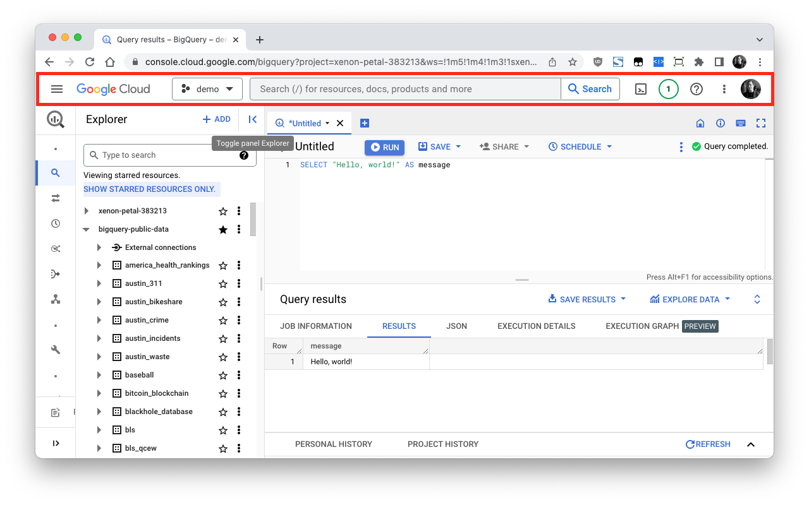

BigQuery Toolbox: Settings
This extension can hide not only the explorer panel, has a few more tricks up the sleeve:
What should happen when you click the icon:
Instead of clicking the item, you can also use the hotkey Cmd+Shift+L (Mac) / Ctrl+Shift+L (Other)
Navigation Menu
Top Bar
Explorer Panel
Query results